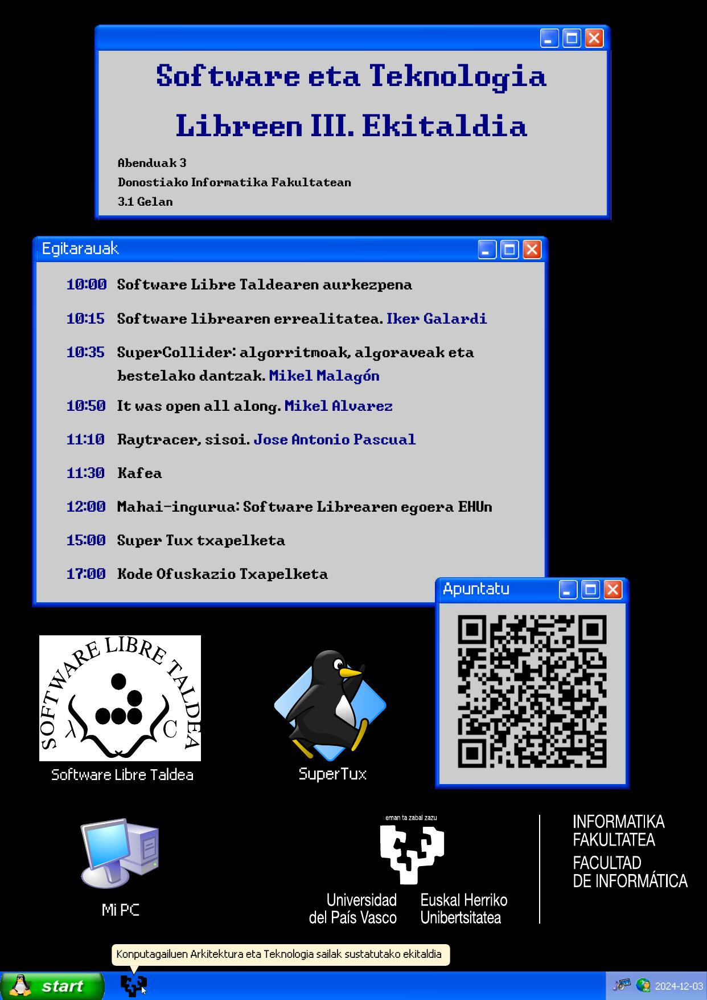
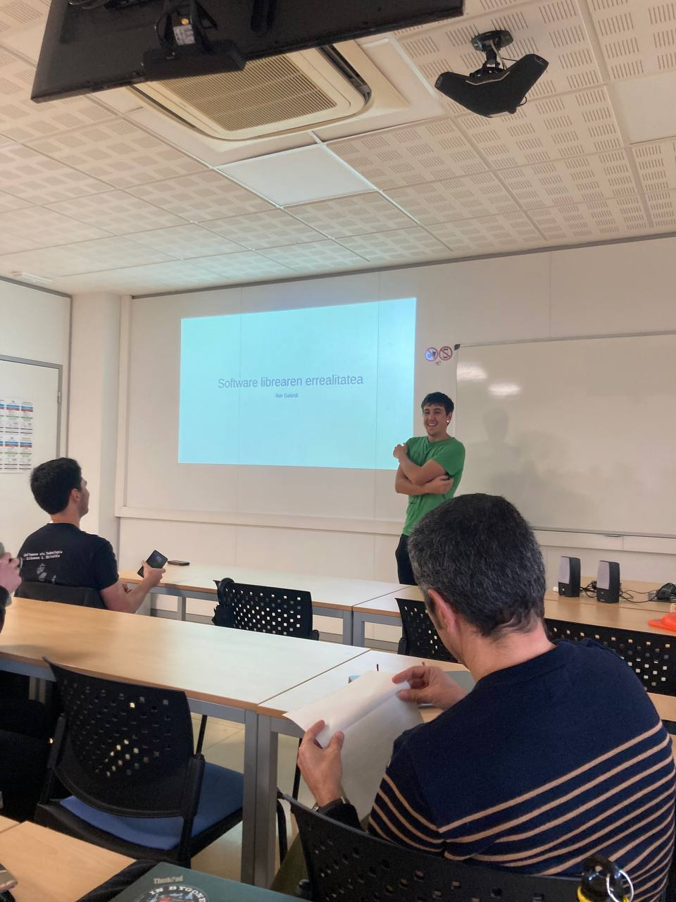
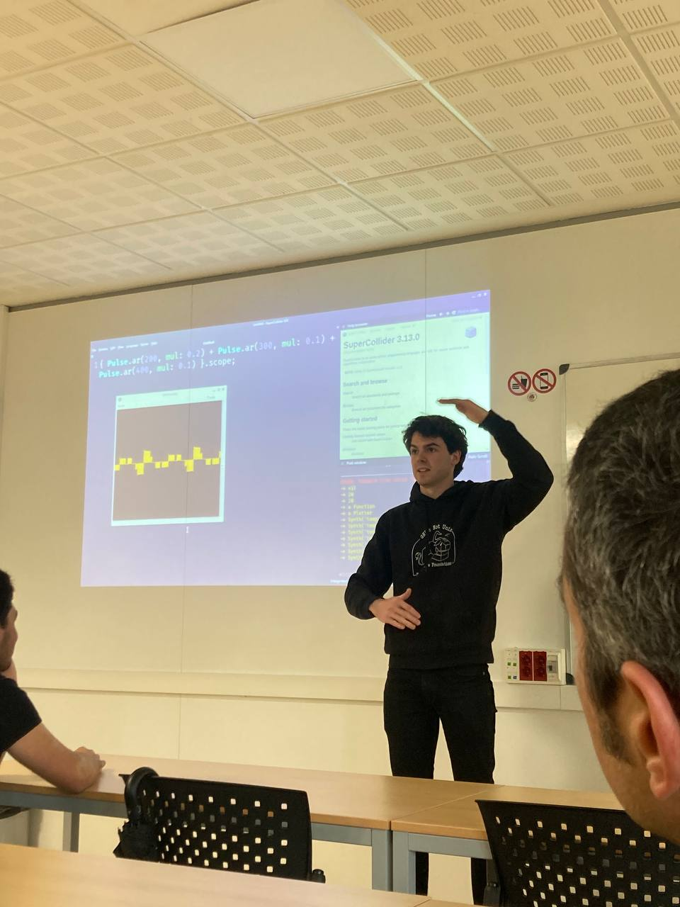
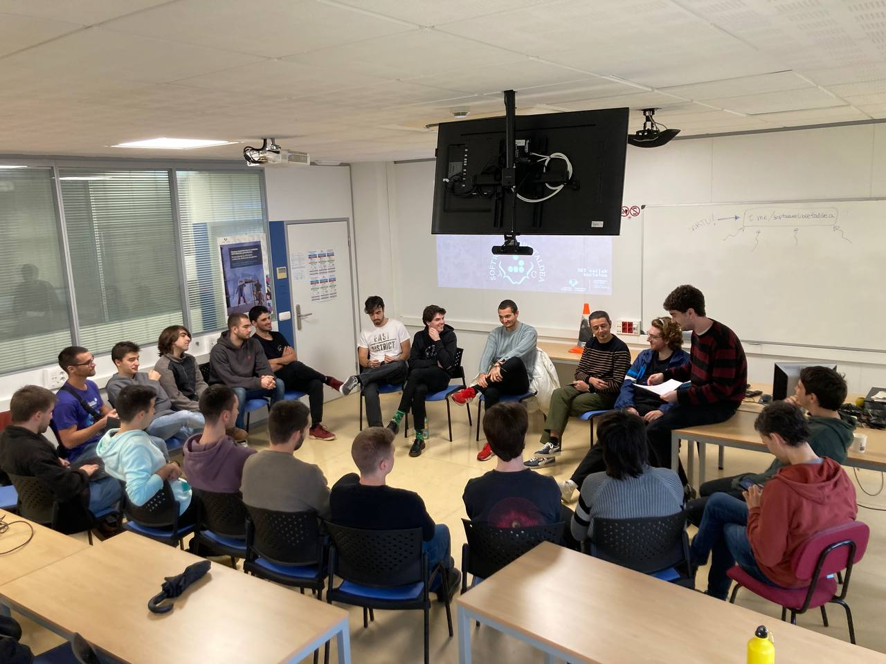
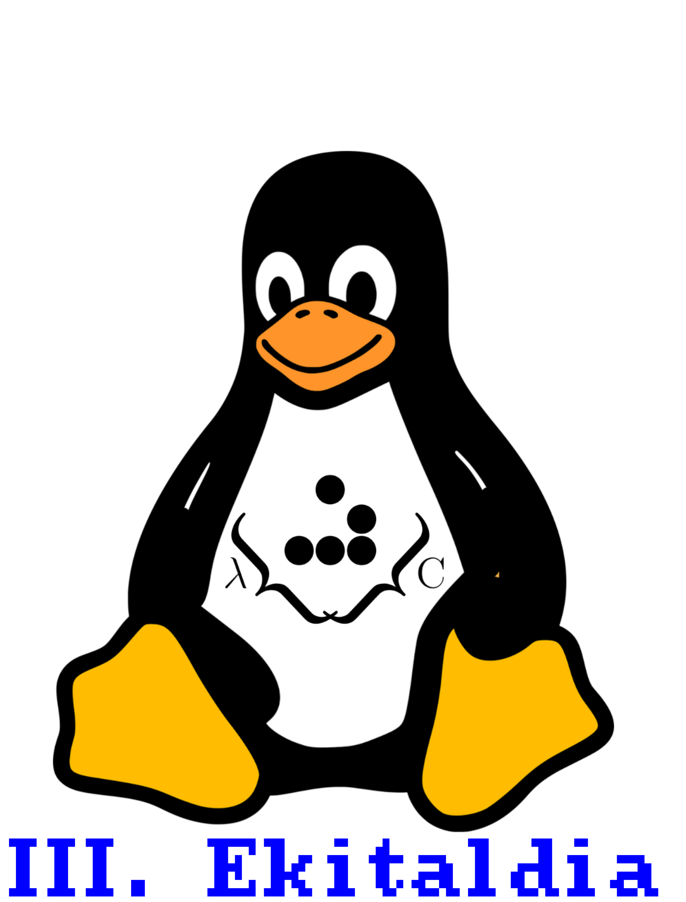

III. Ekitaldia
Zeinen ondo dagoen beste SLT-en ekitaldi baten parte izatea. Honakoan, hau izan zen gure kartela, Windows - gure etsaiaren - estiloan. Honek gogoratzen gaitu zeinen zortea dugun zulo beltz hortatik laister ateratzeagatik. Hitzaldiak etxekoek aurkeztu zituzten, SLT-ko kideak, eta gure Jose maiteak. Oraingoan berrikuntza mahi ingurua izan zen, oso arrera ona izan zuena. Ekitaldia LAN party batekin amaitu zen; dirudienez, Tux-en mundutik gidatzeak neka neka utzi zituen gure software librearen gudariak.

Hitzaldien argazkiak:


Mahi-ingurua:

Ekitaldi honetan, berriz ere, arte paregabea izan genuen. Kamisetak hurrengo marrazkiarekin inprimatu genituen, gure Tux kuttuna protagonista izanda.

Azkenik, ekitaldian egoteko zorte paregabea izan ez zenuenentzat (edo etorri zinaten nostalgikoentzat), Ainhizeren eskutik duzue bideo-laburpen bat. Laister arte libre-lagunak!